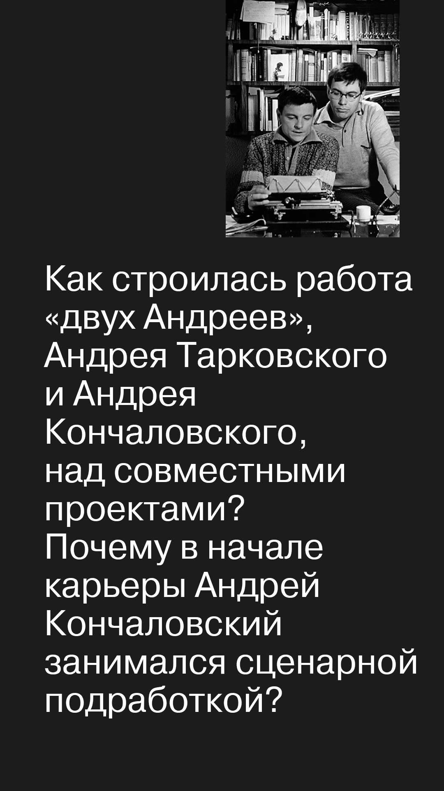
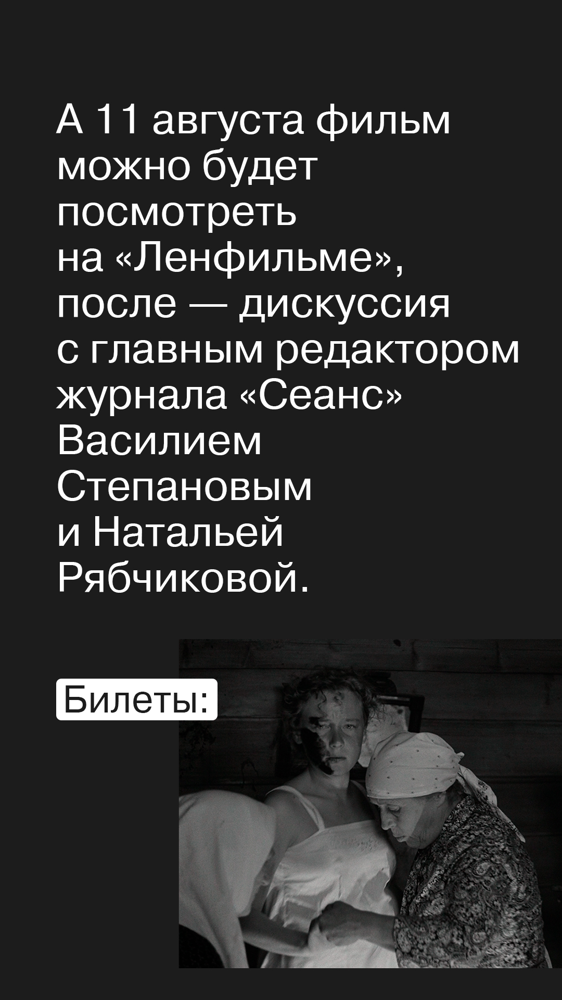
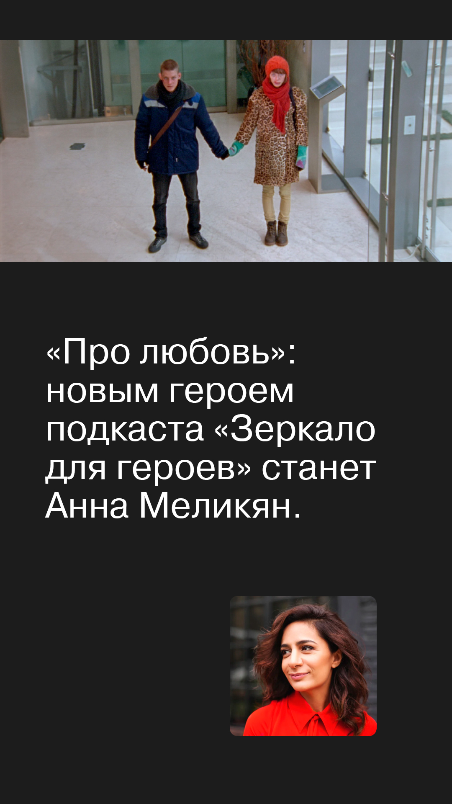
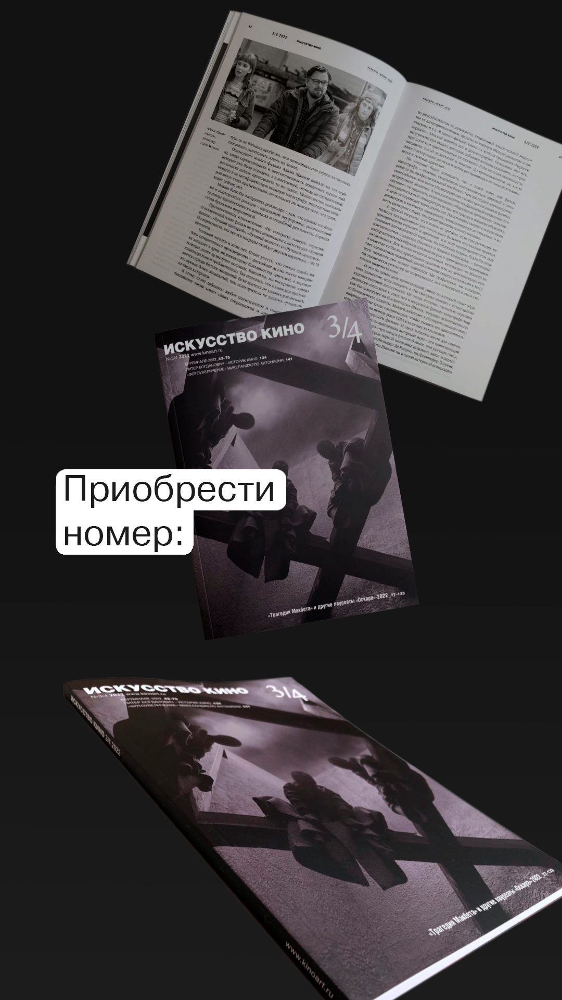
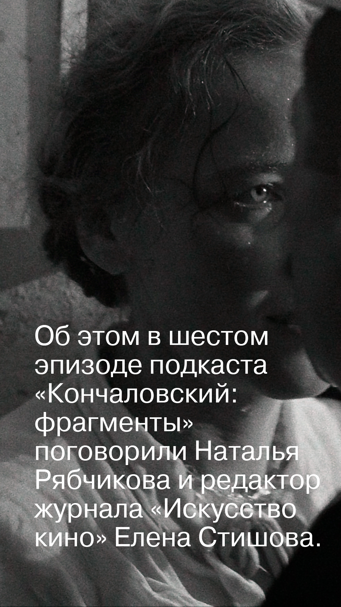
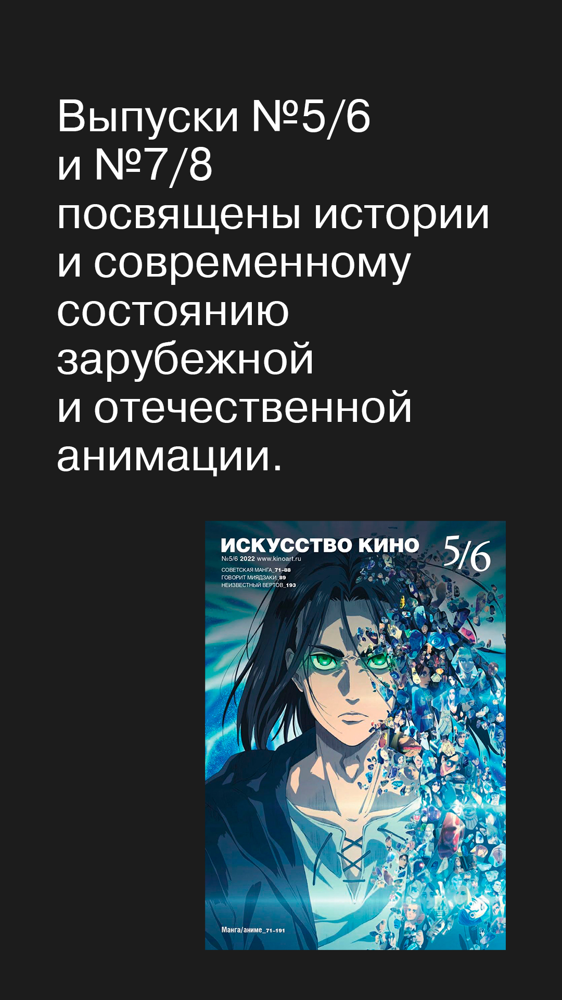
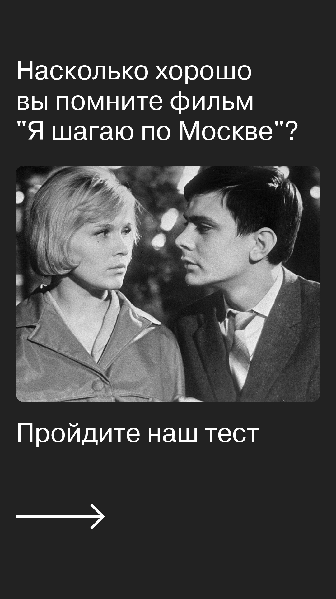
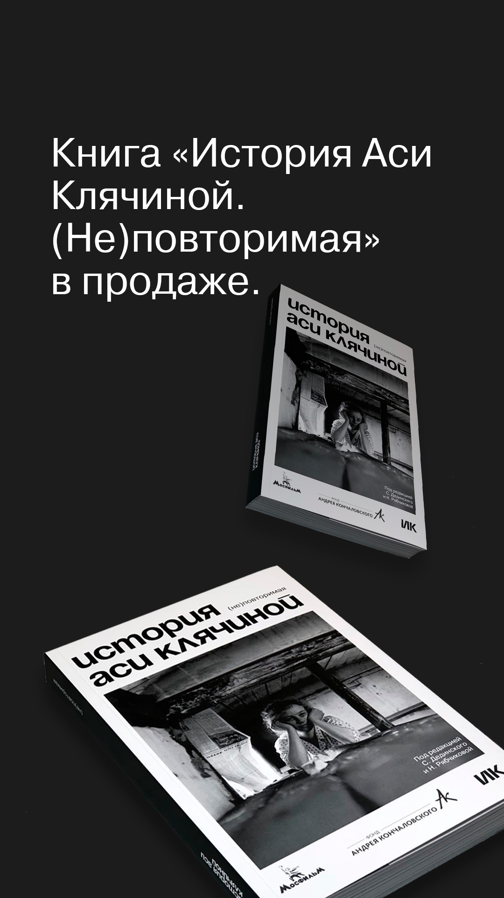

Журнал «Искусство кино»Iskusstvo Kino Journal
Редакционный дизайн соц. сетей · Издаётся с 1931Editorial social media design · Published since 1931








«Искусство кино» — старейший европейский журнал о кинематографе, издаётся с 1931 года. Издание с такой историей и с таким читателем работает в специфическом редакционном режиме: каждая публикация встроена в интеллектуальную традицию, которую журнал формировал десятилетиями, и одновременно должна соответствовать ритму современных цифровых коммуникаций.
Оформление всех онлайн-коммуникаций журнала: новостные карточки в постах и сторис, анонсы публикаций, тестовые интерактивы, серии-карусели, визуальное сопровождение редакционного потока. Соблюдение гайдлайна и скорости новостных таймингов. Дополнительно — корректорская приёмка новостных материалов перед публикацией.
Работа была устроена не как дизайн-проектирование, а как встроенность в ежедневный поток редакции: обсуждение повестки, быстрая отрисовка карточек под конкретную новость или материал, сдача в публикацию в тот же день. В таком режиме ценится не оригинальность каждого решения, а способность держать единую визуальную интонацию на дистанции сотен публикаций.
Дизайнер онлайн-коммуникаций. Отвечала за визуальное оформление новостного потока журнала в соц. сетях, соблюдение гайдлайна и скорости публикаций, корректорскую приёмку материалов.
Полгода встроенной работы в редакционном потоке одного из старейших изданий о кино в Европе. Опыт, который я дальше использую как профессиональную оптику: во всякой работе с текстом, кинокритикой и редакционными проектами.
Iskusstvo Kino is the oldest European film journal, published since 1931. A publication with this history and this reader works in a specific editorial register: every release sits inside an intellectual tradition the journal has built over decades, and at the same time must keep the pace of contemporary digital communication.
Design of all online communications for the journal: news cards in posts and stories, publication announcements, visual support for the editorial flow. Adherence to the journal's guideline and the speed of news cycles. Additionally — proofreading news materials before publication.
The work was structured not as design projects but as embeddedness in the daily editorial flow: agenda discussions, fast card production for a specific news item or material, same-day delivery. In this mode, what gets valued is not the originality of each decision but the ability to hold a single visual intonation across hundreds of publications.
Designer for online communications. Responsible for the visual design of the journal's news flow, adherence to the guideline and the speed of publication, and for proofreading material on intake.
Six months of embedded work in the editorial flow of one of Europe's oldest film publications. An experience that since shapes professional vision: in any work with text, film criticism, and editorial projects.